Aquella vez · Manual de español
Unidad 10
Biografías, estados y despedida

Biografías
Isabel la Católica
Lee el texto y contesta las preguntas.
Isabel la Católica fue reina de Castilla. Nació en España en 1451 y murió en 1504.
Fue una mujer muy importante en la historia de España. Se casó con Fernando de Aragón. Juntos fueron conocidos como los Reyes Católicos.
Isabel gobernó Castilla durante muchos años. Uno de sus grandes logros fue unir su reino con el de Fernando. También ayudó a fortalecer el poder de la monarquía.
En 1492, los Reyes Católicos terminaron la conquista de Granada. Ese mismo año, Isabel apoyó el viaje de Cristóbal Colón a América.
Durante su reinado, España se hizo más fuerte y más importante en Europa. Isabel también impulsó cambios en la administración y en la organización del reino.
Fue una reina fuerte, inteligente y muy religiosa. Hoy muchas personas la recuerdan como una de las figuras más importantes de la historia española.
EjercicioPreguntas
- ¿Quién fue Isabel la Católica?
- ¿Dónde nació Isabel la Católica?
- ¿En qué año nació?
- ¿En qué año murió?
- ¿Con quién se casó Isabel?
- ¿Cómo fueron conocidos Isabel y Fernando?
- ¿Qué reino gobernó Isabel?
- ¿Qué lograron los Reyes Católicos en 1492?
- ¿Qué viaje apoyó Isabel en 1492?
- ¿Por qué España se hizo más fuerte durante su reinado?
- ¿Cómo era Isabel según el texto?
- ¿Por qué muchas personas recuerdan a Isabel la Católica?
EjercicioDos biografías. Completa los textos con los verbos de la lista.
Atención: los verbos ya están conjugados. Decide en qué texto va cada verbo.
Verbos: nació — era — vivía — escribió — recibió — murió — fue — estudiaba — viajaba — publicó — tenía — trabajó
Texto 1: Gabriel García Márquez
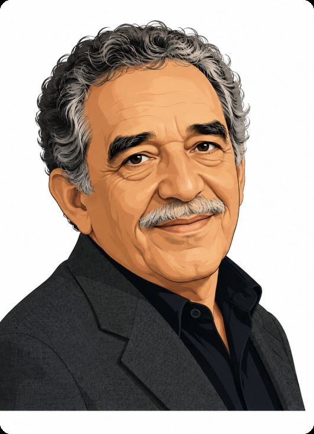
Gabriel García Márquez en Colombia en 1927. De joven periodismo y también como periodista.
García Márquez un escritor muy importante de Hispanoamérica. Él novelas, cuentos y artículos. Su libro más famoso Cien años de soledad.
Durante su vida, por diferentes países y en México durante muchos años. En 1982 el Premio Nobel de Literatura. Gabriel García Márquez en 2014.
Texto 2: Federico García Lorca
Federico García Lorca en España en 1898. Cuando era joven, mucho interés por la música, la poesía y el teatro.
Lorca poeta y dramaturgo. También obras de teatro muy famosas, como La casa de Bernarda Alba y Bodas de sangre.
En su época, Lorca una persona muy creativa y sensible. poemas, canciones y textos teatrales. Federico García Lorca en 1936.
EjercicioCompleta las frases con el verbo entre paréntesis. Usa pretérito indefinido o imperfecto.
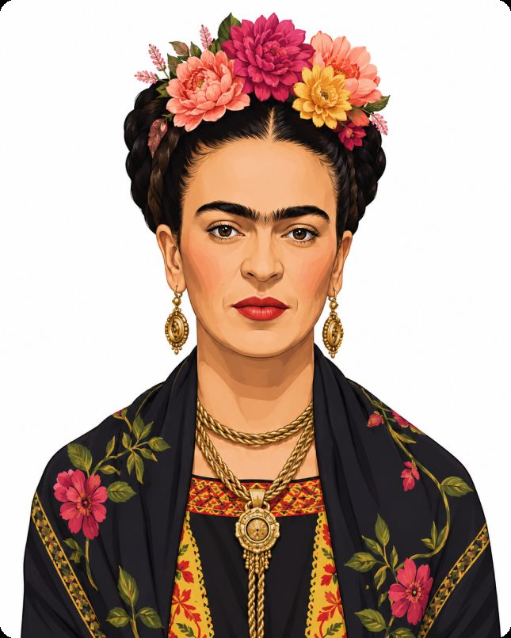
Gabriel García Márquez en Colombia en 1927. (nacer)
Federico García Lorca poeta y dramaturgo. (ser)
Frida Kahlo muchos autorretratos. (pintar)
Pablo Neruda poemas de amor. (escribir)
Shakira música desde muy joven. (cantar)
Diego Maradona un futbolista muy famoso. (ser)
Está todo bien
Lee el diálogo y contesta
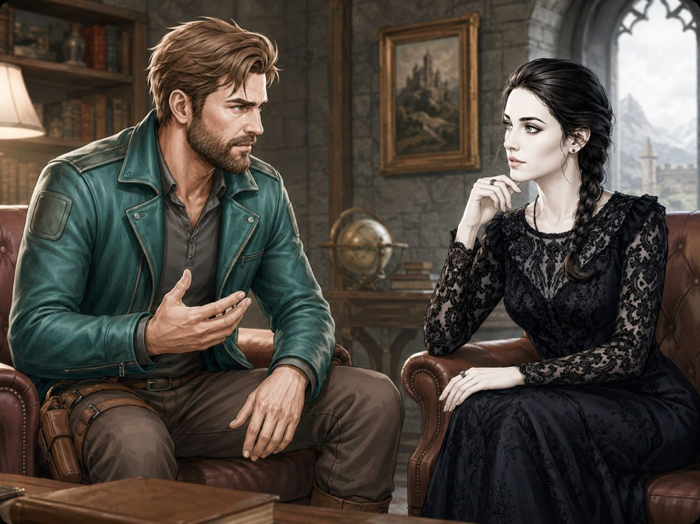
AliciaHola, Robert. ¿Qué te pasa? ¿Por qué estás tan serio?
RobertEstoy cansado, Alicia. La gente de mi fortaleza está imposible.
Alicia¿Imposible? ¿Qué ocurre?
RobertTodos están nerviosos. Los guardias están enojados, los técnicos están confundidos y los cocineros están de mal humor.
AliciaBueno, tal vez están trabajando demasiado.
RobertPuede ser, pero esto es demasiado. El ascensor está roto, la cocina está sucia y la sala de reuniones está llena de papeles.
Alicia¿Y tus ayudantes?
RobertMis ayudantes están desaparecidos. Nadie está en su lugar. Uno está en el jardín, otro está en la biblioteca y otro está durmiendo en la sala de control.
AliciaEso no suena muy organizado.
RobertExacto. Yo quiero una fortaleza seria, pero hoy todo está fuera de control.
AliciaTranquilo. No todo está perdido.
Robert¿No? La puerta principal está abierta, las luces están apagadas y el café está frío.
AliciaBueno… eso sí es grave.
Robert¿Ves? Por fin alguien me entiende.
AliciaRobert, estás muy estresado. Primero toma un café caliente. Después habla con todos.
RobertTienes razón. Pero si el café sigue estando frío, voy a declarar emergencia nacional en la fortaleza.
AliciaMuy bien. Pero primero respira. Estás enojado, pero todavía estás a tiempo de arreglarlo.
RobertGracias, Alicia. Tú siempre estás tranquila.
AliciaNo siempre. Pero hoy estoy más tranquila que tú.
EjercicioPreguntas
- ¿Cómo está Robert al comienzo del diálogo?
- ¿Cómo está la gente de la fortaleza?
- ¿Cómo están los guardias?
- ¿Cómo están los técnicos?
- ¿Cómo están los cocineros?
- ¿Cómo está el ascensor?
- ¿Cómo está la cocina?
- ¿Cómo está la sala de reuniones?
- ¿Dónde está un ayudante?
- ¿Dónde está otro ayudante?
- ¿Dónde está el tercer ayudante?
- ¿Cómo está la puerta principal?
- ¿Cómo están las luces?
- ¿Cómo está el café?
- ¿Cómo está Alicia al final del diálogo?
EjercicioContesta verdadero o falso
- Robert está muy tranquilo al comienzo del diálogo.
- La gente de la fortaleza está imposible.
- Los guardias están enojados.
- Los técnicos están muy seguros de todo.
- Los cocineros están de mal humor.
- El ascensor está roto.
- La cocina está limpia.
Ejercicio¿Cómo está Nátasha? Contesta con las palabras de estados emocionales
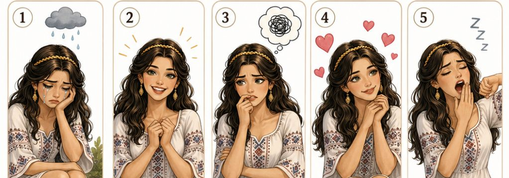
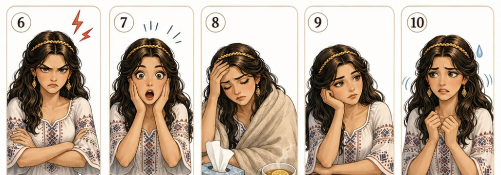
Estados emocionales y físicos: triste · contenta · preocupada · enamorada · cansada · enojada · sorprendida · enferma · aburrida · nerviosa
Ejercicio¿Cómo estás hoy? Pregunta a tu compañero/a
Ejemplo: Hoy estoy bien. Estoy contento y relajado...
Ejercicio¿Cómo está el objeto? Contesta usando el verbo estar
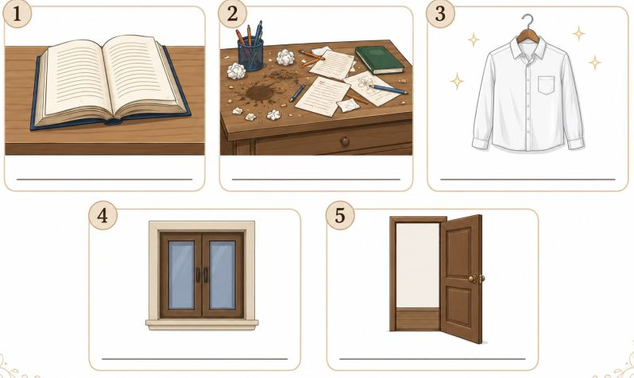
Adjetivos: abierto · sucio · limpio · cerrado · abierta

Ser y estar
No es lo mismo ser y estar. Ser triste parece una característica de la persona. Estar triste es solo un momento.
Una persona puede estar triste hoy, pero mañana puede estar contenta.
Estar triste un día es normal y saludable. La tristeza también nos ayuda a pensar y descansar. Pero vivir triste para siempre no es bueno.
No creerás lo que me pasó
Lee el correo electrónico
Ejercicio2. ¿A quién se refieren las afirmaciones?
Lee las frases y escribe el nombre correcto: Marcos, Luis, Nátasha o Zmaj.
Escribe el correo electrónico. →
Recibe el correo electrónico. →
Camina por la ciudad de Córdoba. →
Ve una sombra enorme en el cielo. →
Al principio piensa que ve un dragón peligroso. →
Vuela despacio y parece tranquilo. →
Llama al dragón con cariño. →
EjercicioCompleta las frases con la forma correcta de estar en pasado y el gerundio del verbo entre paréntesis.
Ejemplo: Marcos estaba caminando por Córdoba. (caminar)
Marcos un correo electrónico a Luis. (escribir)
Luis el mensaje de Marcos. (leer)
Marcos por el parque cuando vio una sombra enorme. (caminar)
La gente hacia el cielo. (mirar)
Algunos niños de miedo. (gritar)
Otras personas fotos con el celular. (sacar)
Zmaj sobre el parque. (volar)
El dragón despacio. (bajar)
Nátasha a Zmaj con cariño. (llamar)
Marcos que era un dragón peligroso. (pensar)
Todos muy sorprendidos. (estar)
Luis las novedades de Marcos. (esperar)
Ejercicio¿Qué pasó? Completa las frases de acuerdo a las imágenes
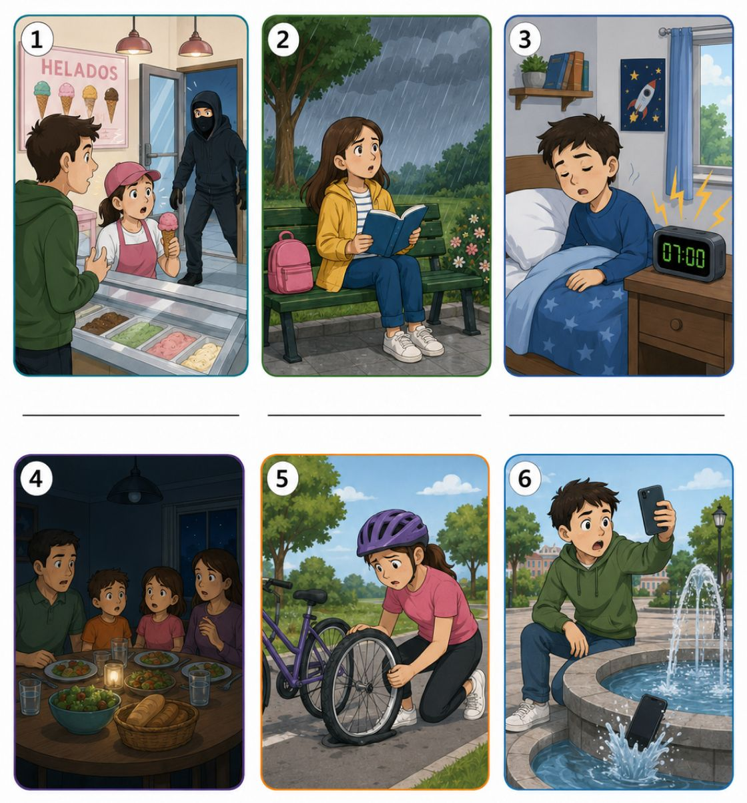
Palabras útiles: asaltante · llover · despertador · luz · durmiendo · cenando · rueda · agua · leyendo · andando · pidiendo · sacando
Cuando estaba un helado, entró un a la heladería.
Cuando estaba en el parque, empezó a .
Cuando estaba , sonó el .
Cuando la familia estaba , se cortó la .
Cuando la chica estaba en bicicleta, se pinchó una .
Cuando el chico estaba una foto, el celular se cayó al .
EjercicioContesta las preguntas. Habla con tu compañero/a
- ¿Qué estabas haciendo cuando empezó el Mundial de Rusia?
- ¿Dónde estabas cuando viste el primer partido del Mundial de Rusia?
- ¿Cómo te sentiste cuando Rusia le ganó a España?
Gramática
Pretérito indefinido e imperfecto
1. Pretérito indefinido
Presenta hechos terminados en el pasado. En una biografía, cuenta los acontecimientos principales.
Marcos llegó a Córdoba el año pasado. · Alicia conoció a Robert en la estación.
En una narración, hace avanzar la historia: llegó, miró y llamó.
2. Pretérito imperfecto
Describe personas, lugares y situaciones del pasado. También expresa hábitos.
Marcos era curioso y vivía en Córdoba. · Alicia leía todas las tardes. · Hacía buen tiempo y el parque estaba lleno de gente.
3. Los dos tiempos juntos
El imperfecto presenta el contexto; el indefinido cuenta lo que pasó.
Marcos caminaba por el parque cuando vio a Zmaj.
Era de noche. Nátasha estaba tranquila, pero Robert se sorprendió al ver al dragón.
Ser y estar + adjetivo
4. ¿Cómo es? / ¿Cómo está?
Ser describe una característica. Robert es tranquilo.
Estar expresa un estado en un momento concreto. Hoy Robert está cansado. · Nátasha está contenta. · La puerta está abierta.
En el pasado
Alicia era alegre, pero aquel día estaba triste.
Marcos estaba nervioso antes de hablar con Nátasha.
El adjetivo concuerda con el sujeto: Robert estaba sorprendido. · Alicia y Nátasha estaban sorprendidas.
Ejercicio5. Completa con indefinido o imperfecto
1. Marcos en Córdoba cuando conoció a Alicia. (vivir)
2. Ayer Robert al parque. (ir)
3. Nátasha a Zmaj todos los días. (llamar)
4. El cielo oscuro cuando apareció el dragón. (estar)
Ejercicio6. Completa con era o estaba
1. Alicia una persona alegre.
2. Después del viaje, Robert cansado.
3. La puerta abierta.
4. Marcos curioso desde niño.
Escribe dos frases: cómo eras antes y cómo estabas ayer.
Estar en imperfecto + gerundio
1. ¿Qué estaba pasando?
Usamos esta estructura para una acción que estaba en curso en un momento del pasado.
Marcos estaba escribiendo un correo. · Nátasha estaba llamando a Zmaj. · Los niños estaban mirando al cielo.
Estar en imperfecto: yo estaba · tú estabas · él / ella / usted estaba · nosotros/as estábamos · vosotros/as estabais · ellos / ellas / ustedes estaban
El gerundio no cambia: estaba leyendo, estábamos leyendo.
2. Una acción interrumpida
Estar en imperfecto + gerundio presenta la acción en curso. El indefinido cuenta el hecho que la interrumpe.
Marcos estaba caminando por el parque cuando vio una sombra enorme.
Alicia estaba leyendo cuando Robert llamó.
Zmaj estaba volando cuando Nátasha lo llamó.
El gerundio
3. Formas regulares
Quitamos -ar, -er o -ir del infinitivo y añadimos la terminación.
Verbos en -AR → -ando: hablar → hablando · caminar → caminando
Verbos en -ER / -IR → -iendo: comer → comiendo · vivir → viviendo · escribir → escribiendo
4. Formas irregulares
Algunos verbos cambian la vocal: pedir → pidiendo · decir → diciendo · dormir → durmiendo · morir → muriendo
Otros se forman con -yendo: leer → leyendo · oír → oyendo · ir → yendo
Recuerda: Estaba cansado expresa un estado. Estaba descansando expresa una acción en curso.
Robert estaba descansando porque estaba cansado.
Ejercicio5. Completa con estar en imperfecto + gerundio
Ejemplo: Zmaj estaba volando. (volar)
1. Marcos un correo cuando vio a Zmaj. (escribir)
2. Alicia cuando sonó el teléfono. (leer)
3. Robert cuando empezó a llover. (dormir)
4. Nátasha y Marcos fotos cuando el dragón bajó. (sacar)
Ejercicio6. Une las acciones y escribe frases con cuando
Ejemplo: Alicia estaba leyendo cuando Robert llegó.
1. Alicia / leer → Robert / llegar
2. Marcos / caminar → ver / a Zmaj
3. Nátasha / hablar → el dragón / bajar
Ejercicio7. Habla con tu compañero/a
¿Qué estabas haciendo ayer a las ocho?
Cuenta una acción que fue interrumpida por otra.
Cultura
Curiosidades del mundo hispanohablante
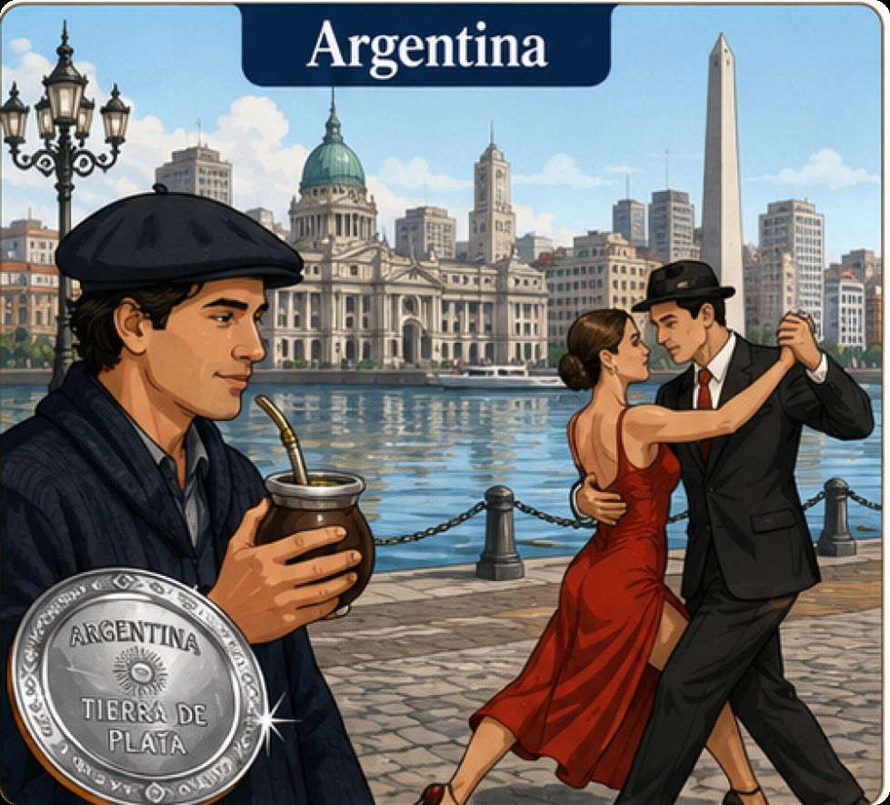
Argentina
Argentina es un país muy grande. Está en América del Sur. Su capital es Buenos Aires.
En Argentina muchas personas toman mate. El mate es una bebida caliente. Se toma con una bombilla y se comparte con otras personas.
Argentina también es famosa por el tango. El tango nació en la zona del Río de la Plata, especialmente en Buenos Aires y Montevideo. Hoy es una música y un baile conocidos en todo el mundo.
Otra curiosidad es el nombre del país. "Argentina" viene de la palabra latina argentum, que significa "plata".
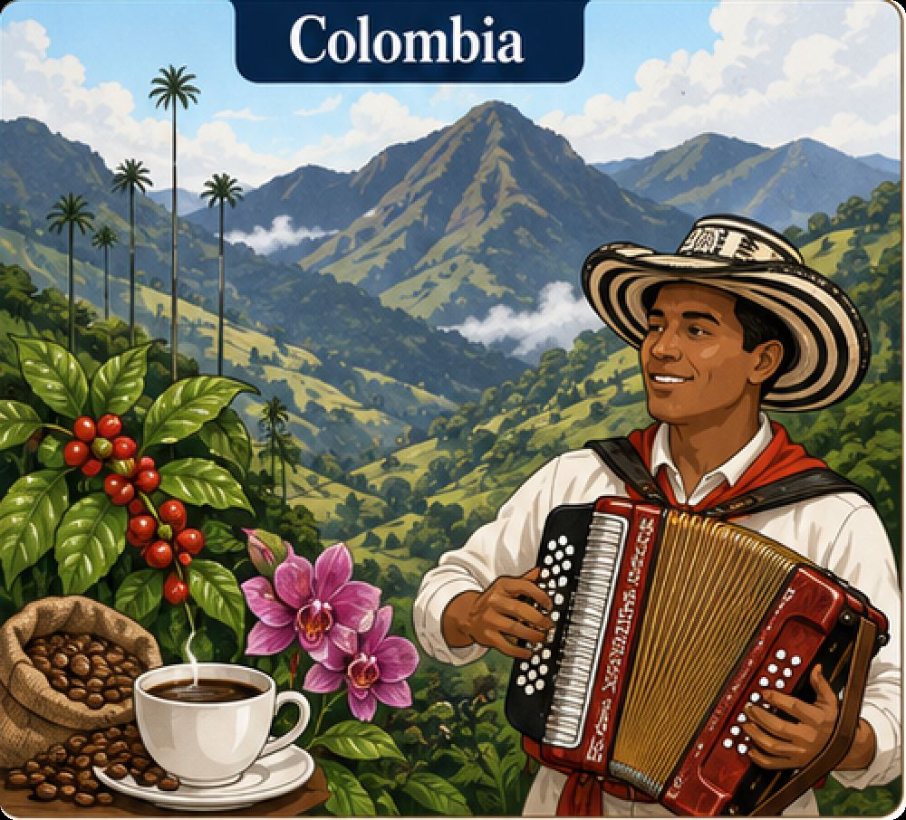
Colombia
Colombia está en América del Sur. Su capital es Bogotá. Es un país con montañas, selvas, playas y muchas ciudades importantes.
Colombia es famosa por el café. Muchas personas en el mundo conocen el café colombiano. También es famosa por su música.
Una música muy importante de Colombia es el vallenato. El vallenato viene de la región del Gran Magdalena. Tiene canciones, acordeón y mucha tradición.
En Colombia también hay muchas flores. Por eso, en algunas ciudades hay fiestas con flores, música y desfiles.
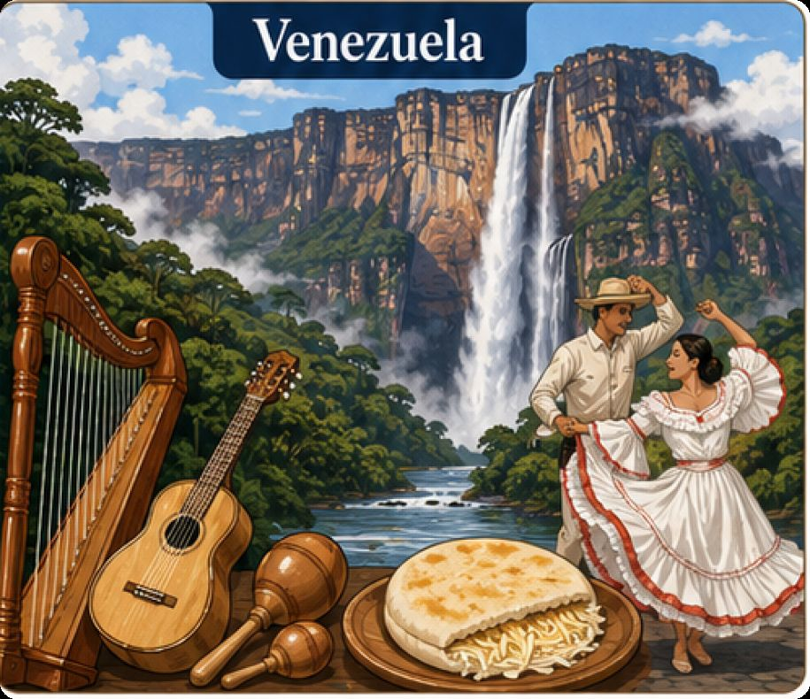
Venezuela
Venezuela está en América del Sur. Su capital es Caracas. El país tiene playas, montañas, llanos, ríos y selvas.
Una curiosidad muy famosa de Venezuela es el Salto Ángel. Es la cascada más alta del mundo. Está en el estado Bolívar y mide unos 979 metros.
En Venezuela muchas personas comen arepas. La arepa es redonda y se hace con maíz. Puede tener queso, carne, pollo u otros ingredientes.
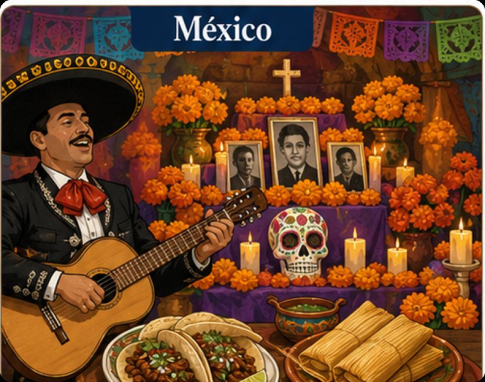
México
México está en América del Norte. Su capital es Ciudad de México. Es un país con mucha historia, muchas ciudades y una comida muy famosa.
Una curiosidad de México es el Día de los Muertos. En esta fecha, muchas familias recuerdan a sus seres queridos. Hacen altares, ponen flores, comida y fotos.
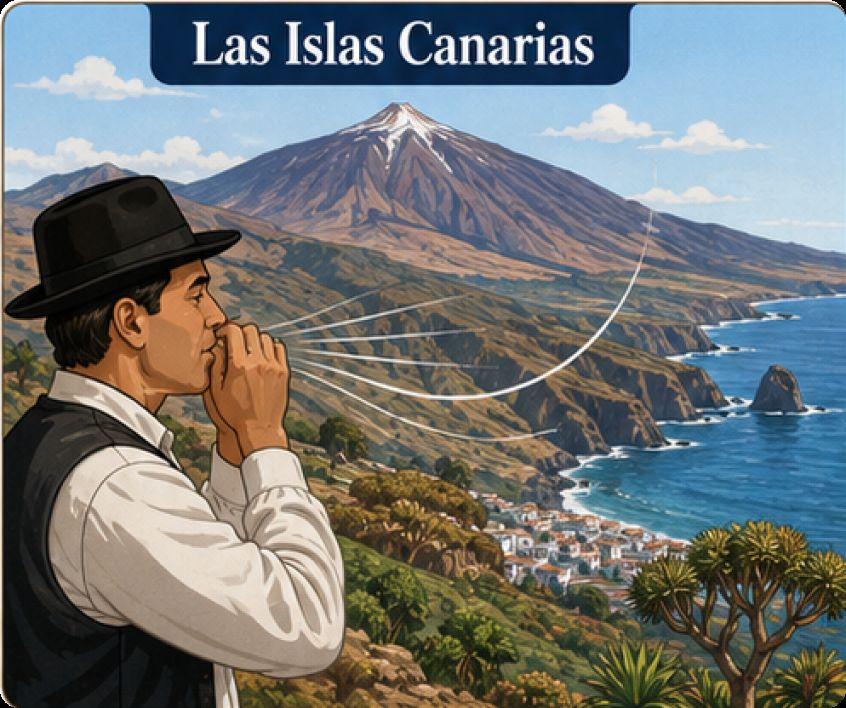
Las Islas Canarias
Las Islas Canarias están en el océano Atlántico. Son parte de España. Allí se habla español.
Una curiosidad muy especial es el silbo gomero. Es una forma de comunicación con silbidos. Viene de la isla de La Gomera. Sirve para comunicarse a distancia, entre montañas y barrancos.
En Canarias también está el Teide, un volcán muy famoso. Está en Tenerife y es el pico más alto de España.
Las islas tienen playas, montañas, pueblos bonitos y una cultura muy especial.
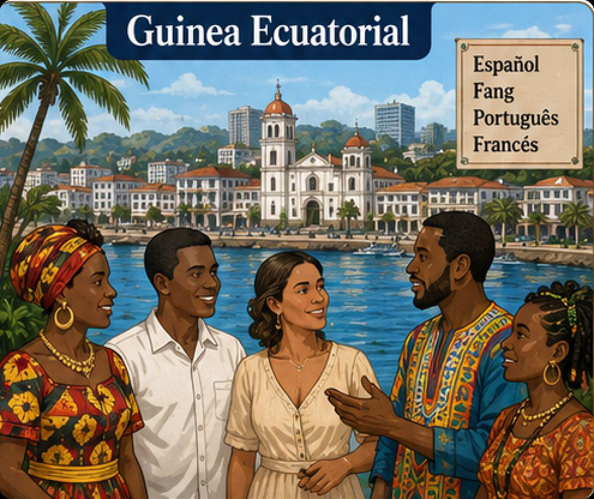
Guinea Ecuatorial
Guinea Ecuatorial está en África. Su capital es Malabo. Es un país muy importante para el mundo hispanohablante porque allí el español es lengua oficial.
Guinea Ecuatorial es el único país de África donde el español es lengua oficial. Según el Instituto Cervantes, más del 85 % de la población puede usar el español para comunicarse.
Pero en Guinea Ecuatorial también se hablan otras lenguas. Por ejemplo, el fang, el bube y el pichi.
EjercicioPreguntas
- ¿Qué bebida toman muchas personas en Argentina?
- ¿Por qué es famoso el café de Colombia?
- ¿Cómo se llama la cascada más alta del mundo y dónde está?
- ¿Qué celebran muchas familias en México durante el Día de Muertos?
- ¿Qué es el silbo gomero?
- ¿Por qué Guinea Ecuatorial es importante para el mundo hispanohablante?
Reflexión final
La vida en los virreinatos
Durante el Imperio español, los virreinatos fueron grandes territorios gobernados en nombre del rey de España. No eran países independientes, sino partes de una misma monarquía que unía distintos pueblos, ciudades y regiones bajo la autoridad de la Corona.
La vida en los virreinatos era muy variada. Había grandes ciudades, como México, Lima, Bogotá o Buenos Aires, donde vivían autoridades, comerciantes, artesanos, religiosos, estudiantes y trabajadores. También existían pueblos indígenas, zonas rurales, estancias, minas, puertos y caminos que conectaban distintas regiones del imperio.
La sociedad estaba formada por personas de diferentes orígenes: españoles nacidos en la península, criollos nacidos en América, indígenas, mestizos, africanos y sus descendientes. Cada grupo ocupaba un lugar distinto dentro de la sociedad, y no todos tenían las mismas oportunidades ni el mismo poder.
Un aspecto importante es que los indígenas eran considerados súbditos del rey de España. Esto significa que, legalmente, no eran extranjeros ni enemigos, sino personas que pertenecían a la monarquía española. Como súbditos, debían obedecer al rey, pagar tributos y cumplir ciertas obligaciones. Al mismo tiempo, la Corona decía protegerlos mediante leyes especiales, como las Leyes de Indias, que buscaban regular el trato hacia ellos.
Sin embargo, en la práctica, la situación fue compleja. Aunque las leyes reconocían ciertos derechos a los indígenas, muchas veces vivían bajo condiciones difíciles. En distintas regiones debían trabajar, pagar tributos o depender de autoridades locales. También hubo abusos, desigualdades y conflictos. Por eso, una cosa era lo que establecían las leyes y otra muy distinta lo que ocurría en la vida cotidiana.
A pesar de esas dificultades, los pueblos indígenas no desaparecieron ni fueron simples espectadores de la historia. Muchos conservaron sus lenguas, costumbres, formas de organización, fiestas y tradiciones. En algunos lugares, las comunidades indígenas negociaban con las autoridades, defendían sus tierras, participaban en la economía local y adaptaban elementos de la cultura española a su propia realidad.
La Iglesia católica tuvo un papel central en la vida del imperio. Organizaba ceremonias, fiestas religiosas, escuelas, hospitales y misiones. La religión estaba presente en la vida cotidiana, en el calendario, en la educación y en las celebraciones públicas. En muchas regiones, la cultura indígena y la cultura española se mezclaron, dando origen a nuevas formas de arte, música, arquitectura y vida social.
La economía de los virreinatos se basaba en la minería, la agricultura, la ganadería, el comercio y los oficios urbanos. La plata de lugares como Potosí y México fue muy importante para el imperio. En otras zonas, como el Río de la Plata, crecieron la ganadería, el comercio de cueros y la actividad portuaria. Cada región tenía su propio ritmo y su propia importancia dentro del conjunto imperial.
En resumen, vivir en los virreinatos del Imperio español significaba formar parte de una sociedad amplia, diversa y jerárquica. Los indígenas eran súbditos del rey, con obligaciones y también con ciertos derechos reconocidos por la ley. Pero la realidad diaria estuvo marcada por diferencias sociales, abusos, mezclas culturales y formas de adaptación. De ese mundo complejo nacieron muchas de las identidades hispanoamericanas actuales.
Historieta